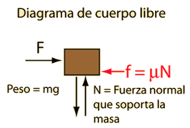
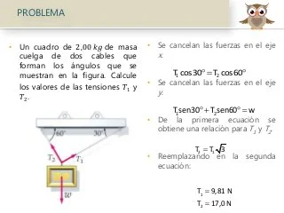

Diagrama de cuerpo libre

Un diagrama de cuerpo libre es una representación gráfica utilizada a menudo por
físicos e ingenieros para analizar las fuerzas que actúan sobre un cuerpo libre. El diagrama de cuerpo libre es
un elemental caso particular de un diagrama de fuerzas. En español, se utiliza muy a menudo la expresión
diagrama de fuerzas como equivalente a diagrama de cuerpo libre, aunque lo correcto sería hablar de diagrama
de fuerzas sobre un cuerpo libre o diagrama de fuerzas de sistema aislado.
Hay que asegurarse de incluir en el diagrama todas las fuerzas que actúan sobre el objeto, y como se trata de una
magnitud vectorial, la flecha se encarga de señalar su dirección y su sentido, mientras que la longitud de la misma
proporciona una idea del módulo o intensidad.
Estos diagramas son una herramienta para descubrir las fuerzas desconocidas que aparecen en las ecuaciones
del movimiento del cuerpo. El diagrama facilita la identificación de las fuerzas y momentos que deben tenerse
en cuenta para la resolución del problema. También se emplean para el análisis de las fuerzas internas que
actúan en estructuras.
Video que te puede ayudar a entender mejor
Ejemplo resuelto

Enlaces externos en los cuales pueden consultar el tema:
Diagrama de Cuerpo Libre - Hyperphysics